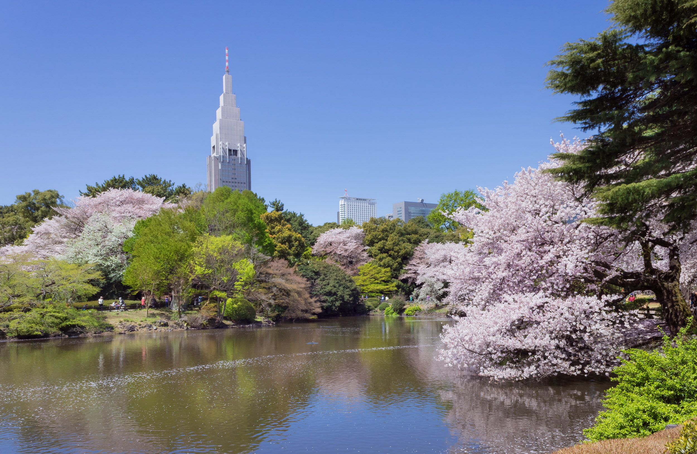

Temple · Asakusa
Sensō-ji Temple
Tokyo's oldest temple. The iconic Kaminarimon Thunder Gate and Nakamise-dori lead to a magnificent hall where incense drifts past 30 million annual worshippers.
6 min readRead more →

Every temple, tower, crossing, garden, and museum worth your time in Tokyo.
Tokyo's oldest temple. The iconic Kaminarimon Thunder Gate and Nakamise-dori lead to a magnificent hall where incense drifts past 30 million annual worshippers.

At 634 metres, Japan's tallest structure offers 360° views across the Kanto plain. On clear winter days, Mount Fuji is visible to the southwest.

Up to 3,000 people flood this intersection simultaneously — pure, distilled Tokyo energy in a single intersection.

144 acres fusing Japanese, French, and English garden styles. Over 1,000 cherry trees of 65 varieties make this the finest sakura location in the city.

World-class museums, Japan's oldest zoo, a lotus-covered lake, and 1,000 cherry trees — all in a single square kilometre of Tokyo.

Japan's oldest museum: 110,000 treasures spanning 10,000 years, from Jomon pottery to National Treasure samurai armour.